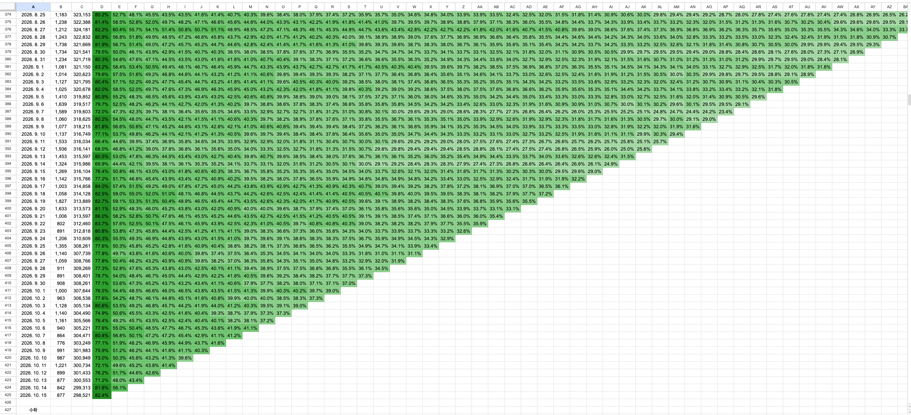
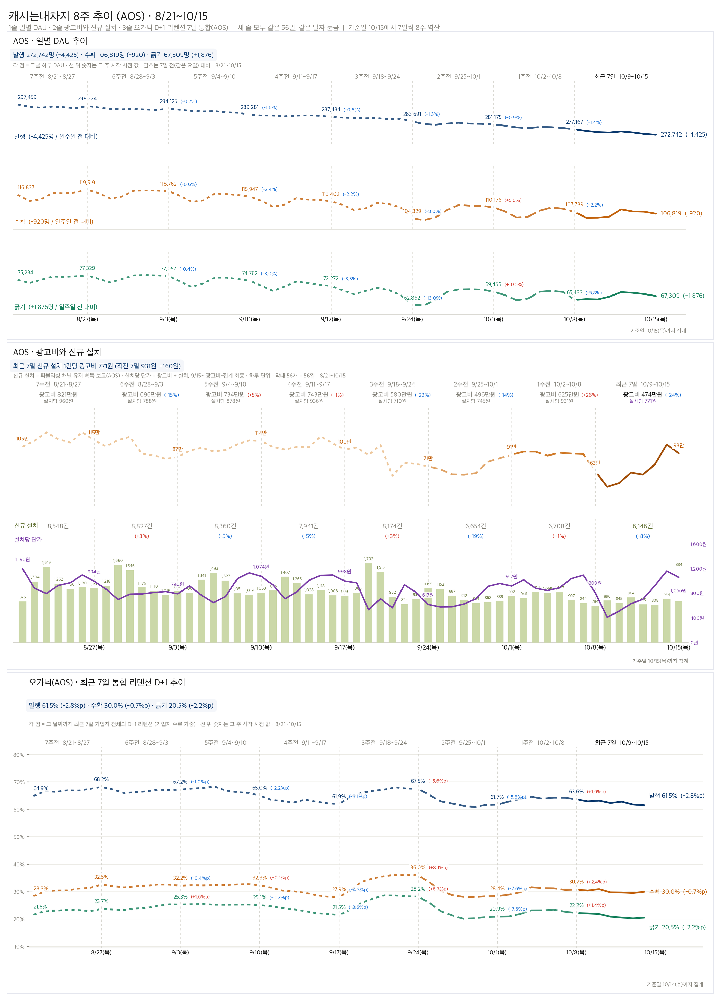
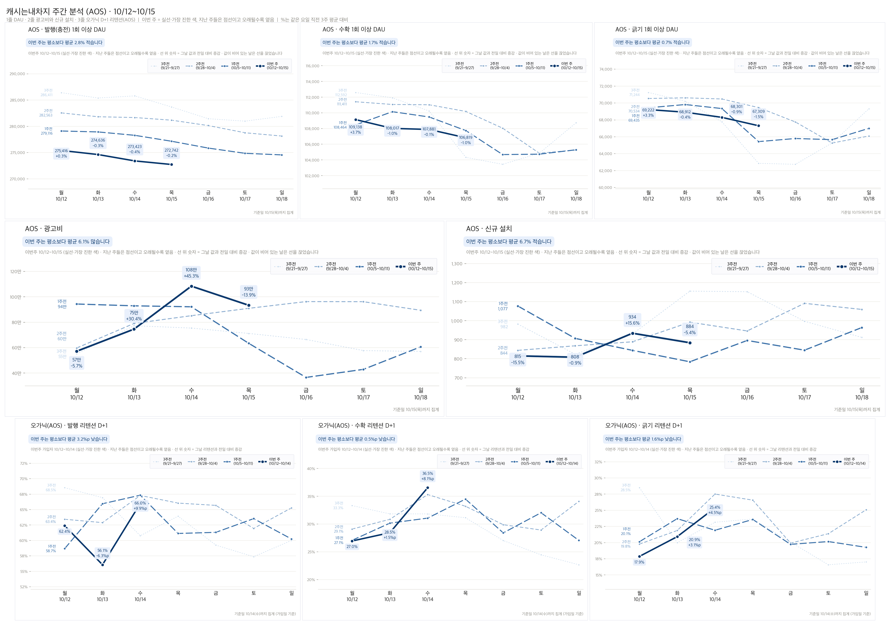
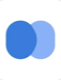

PM 역할에서 발견한 재미
개발을 공부하면서 프로젝트의 방향을 정하고 팀과 완성하는 PM 역할이 재미있었습니다. 좋아하는 여행을 주제로 모행을 직접 기획하고 개발해 엑스포에 출품했습니다.
이후 면접에서 기획 업무를 경험할 기회를 얻어 트리거스에 합류했습니다. 새로운 역할을 직접 배워보고 싶었습니다.
기획과 개발 경험 · 배움에 열린 태도
기획·개발과 마케팅·수익화를 경험한 하동건입니다.
직접 맡은 일과 판단한 이유, 그 과정에서 확인한 결과를 소개합니다.
여행 서비스를 직접 기획해 엑스포에 출품한 경험에서,
광고 운영과 사용자 문의 응대를 맡았던 3개월의 인턴 경험까지.
새로운 역할을 선택한 이유
개발을 공부하면서 프로젝트의 방향을 정하고 팀과 완성하는 PM 역할이 재미있었습니다. 좋아하는 여행을 주제로 모행을 직접 기획하고 개발해 엑스포에 출품했습니다.
이후 면접에서 기획 업무를 경험할 기회를 얻어 트리거스에 합류했습니다. 새로운 역할을 직접 배워보고 싶었습니다.
광고 소재를 만들고, 광고 지면을 생성해 네트워크를 등록하며 사용자 유입과 수익이 발생하는 과정을 경험했습니다. 서비스 초기에도 제가 구성한 광고 지면에서 하루 약 300만~400만 원의 광고 매출이 발생했습니다.
직접 만든 광고로 사용자가 들어오고, 제가 설정한 지면에서 실제 수익이 발생하는 것을 보며 가장 큰 보람을 느꼈습니다.
수익화 · 지면 생성, 미디에이션 등록, 데이터 분석
당시 애드조 게임 오퍼월은 사용자가 게임을 설치하면 서비스에 수익이 발생하는 캠페인이 중심이었습니다. 설치당 300캐시로 참여를 유도하자 설치 수와 매출이 늘었지만, 실제 플레이는 부족했습니다. 게임사들이 고단가 캠페인을 중단하면서 설치당 받는 매출 단가도 낮아졌습니다.
저는 애드조 미팅에서 단가 하락과 광고 파트너의 피드백을 들으며 보상 정책을 바꾸려는 이유를 이해했습니다. 팀은 플레이를 유도하려고 보상을 미션당 300캐시로 바꿨습니다. 이후 설치율이 낮아져, 매출·설치 수·미션 달성률을 함께 유지할 균형점을 찾고자 했습니다.
처음에는 광고 노출이 많아지면 매출도 늘 것이라 생각했습니다. 지면에 따른 가치와 eCPM을 배우고, 보물상자 이용을 하루 15회로 제한하는 구조를 보며 광고 빈도와 사용자 경험을 함께 고려하게 됐습니다.
사용자가 광고를 보고 보상을 받는 흐름부터 서비스의 매출까지 연결해 이해하는 경험이었습니다.
AdMob 광고 지면 생성 · 광고 네트워크 등록
마케팅 · 광고 소재 제작·수정과 성과 관찰
다른 만보기 앱과 비교해 맥스워크의 걷기 보상이 크게 느껴져, ‘1,000보에 200캐시’가 더 효과적일 것으로 예상했습니다. HTML·영상 소재를 제작·수정하며 걷기 보상과 가입 보상을 앞세운 문구를 테스트했습니다.
ROAS를 기준으로 운영한 캠페인에서 가입 보상 문구를 쓴 HTML 소재의 클릭률이 더 높았고, 소재별 광고비 소진액도 가장 컸습니다. 이 테스트에서는 걸으면서 쌓는 보상보다 가입하면 바로 받을 수 있는 보상을 알렸을 때 반응이 더 좋았습니다.
처음에는 퀴즈로 흥미를 끌고, 정답을 맞히면 보상을 알려주면 참여가 늘 것이라 생각했습니다. 하지만 반응이 저조했습니다. 앞선 테스트에서 사용자가 바로 받을 수 있는 보상에 반응했던 점을 떠올려, 퀴즈를 풀기 전에 1,500캐시를 먼저 보여주도록 수정했습니다.
퀴즈 참여 → 정답 → 1,500캐시 보상 안내
“축하해요, 1,500캐시 당첨됐어요!”
수정한 소재는 퀴즈형보다 클릭률과 광고비 소진액이 높았습니다. 앞서 확인한 사용자 반응을 다음 소재의 수정에 적용한 경험이었습니다. 서비스의 강점과 차별점, 가입 혜택도 사용자가 왜 우리 서비스를 써야 하는지 쉽게 알 수 있도록 전달하는 것이 중요하다고 느꼈습니다.
지표 분석에서 보고 형식 개선으로
기존에는 엑셀 시트의 일간 활성 사용자 수(DAU)와 재방문율(리텐션)을 전일과 비교했습니다. DAU가 줄어도 광고비·설치 수 등 관련 지표를 따로 찾아 대조해야 해, 무엇이 달라졌는지 한눈에 파악하기 어려웠습니다.
그래서 DAU·광고비·설치·리텐션을 같은 기간에 맞춰 한 화면에서 비교하도록 배치했습니다. 8주 추이로 변화가 생긴 구간을 찾고, 최근 한 주는 이전 주차의 같은 요일과 비교하도록 구성했습니다.
지표의 배치와 비교 형식은 제가 직접 설계하고, 사수의 조언을 받아 다듬었습니다. 개선한 보고서는 다음 페이지에서 보여드립니다.

기존 리텐션 시트 일부기존 시트 원본 크게 보기
AFTER · 제가 설계하고 매일 공유한 보고서
DAU·광고비·설치·리텐션을 같은 날짜 축으로 정리해, 각 지표를 따로 대조하지 않고 변화를 함께 볼 수 있도록 했습니다. 이 보고서를 매일 슬랙에 공유했습니다. 아래는 리텐션 영역이며, 버튼을 누르면 전체 지표를 볼 수 있습니다.
8주 흐름과 같은 요일을 비교해 DAU가 떨어진 시점 확인
광고비가 줄었는지, CPI가 달라져 신규 유입이 감소했는지 확인
오가닉도 하락했는지 확인해 서비스 자체의 문제 가능성 점검
리텐션이 낮아진 시점에 이벤트나 업데이트가 있었는지 확인
코호트가 바뀌었는지, 특별한 광고 집행으로 유입 구성이 달라졌는지 확인

캐시는내차지 AOS · 8/21~10/158주 전체 지표 크게 보기

동일 요일을 겹쳐 반복 패턴과 변화를 비교주간 전체 지표 크게 보기
개발자와 다른 팀원들에게 어떤 핵심 지표가 필요한지, 어떤 비교 기준과 배치가 한눈에 이해되는지 구체적으로 묻고, 그 피드백을 보고서에 반영하겠습니다.
와이파잉 · 캐시는내차지 CS
개별 사용자 문제를 넘어 서비스 차원의 문제일 수 있다고 판단해 개발팀과 기획팀에 먼저 공유했습니다. 확인 결과 구글 AdMob의 광고 송출 오류였습니다. 사용자가 광고를 볼 수 없는 이유를 알 수 있도록 문의에 신속히 답변하며, 확인된 원인과 조치 중이라는 점을 안내했습니다.
배운 점CS는 사용자와 가장 가까운 접점에서 불편을 듣고, 서비스의 문제를 빠르게 발견할 수 있는 역할이라는 점을 배웠습니다.
쿠팡 경유 쇼핑으로 얻은 번개를 사용하는 룰렛에서, 카테고리별로 중복 상품이 많아 같은 상품이 계속 당첨된다는 문의가 있었습니다. 기존 상품과 가격대가 비슷한 다른 상품을 찾아, 중복되지 않도록 교체했습니다.
배운 점상품을 교체한 뒤, 상품이 다양해져 좋다는 사용자 리뷰가 달렸습니다. 우선순위에서 밀려 있던 문제를 직접 개선해 사용자의 만족으로 이어졌다는 점이 뿌듯했습니다.
지표에서 발견한 운영 문제도 있었습니다. 오가닉 리텐션과 친구 추천 가입이 함께 늘어난 날, 몇 초 사이에 같은 추천 코드로 수십 개의 계정이 가입한 기록을 확인했습니다. IP와 디바이스 ID도 동일한 것을 확인해 어뷰징 사용자를 식별하고 차단했습니다.
학교에서 시작한 기획·개발 경험
AI 여행 일정 추천 서비스 · 2026.05.12 운영 종료
아이디어 제안 · 팀원 모집 · 기획·PM · 백엔드 1인 개발
직접 기획한 여행 서비스를 만들고 싶어, 프로젝트 경험이 필요한 친구들에게 아이디어와 함께, 서비스를 완성해 사용자에게 그 가치를 알려보자는 목표를 제안했습니다. AI 등 필요한 전공의 팀원을 모집해 6인 팀을 꾸리고, 기획과 PM을 맡아 기능 우선순위와 일정을 조율했습니다.
백엔드 개발은 혼자 담당했습니다. 인증·AI 일정 생성 등 핵심 기능을 개발하고 배포했습니다. 오래 걸리는 AI 작업의 상태 확인·재시도와 장애 알림 기능도 만들었습니다.
약 3개월 동안 핵심 기능을 완성하고, 2026 AI EXPO 부스에서 방문객에게 서비스를 직접 설명했습니다. 긍정적인 반응과 피드백을 받으며, 팀과 함께 들인 노력을 인정받는 것 같아 뿌듯했습니다.
모행 개발 포트폴리오 보기 ↗
해외여행자를 위한 eSIM 서비스
백엔드 3인 중 B2B 계정 · 포인트 · 주문 후속 처리
백엔드 3인 중 B2B 회원 가입·승인·인증, 포인트 적립·차감·정산과 프로모션 코드 기능을 담당했습니다.
결제와 이메일·알림톡 처리를 분리해, 알림이 실패해도 주문은 처리되고 알림만 다시 보낼 수 있도록 했습니다.
웹훅 로그의 조회·보관 방식을 정리하고, 국가별 최저가 상품은 필요한 데이터만 가져오도록 개선했습니다.
모두의 로밍 개발 포트폴리오 보기 ↗주니어를 키우는 환경 · 새로운 역할에 대한 도전
좋은 제품도 소비자가 어떤 점이 좋은지 이해할 수 있어야 선택으로 이어진다고 생각합니다. 좋은 브랜드의 이야기를 소비자에게 잘 전달하겠다는 방향에 공감했습니다. 애딧을 알아보면서, 사람들이 관심 있게 보는 콘텐츠로 브랜드를 소개하는 에디토리얼 광고가 매력적으로 다가왔습니다.
광고 소재를 다뤄본 경험을 바탕으로, 브랜드가 전하고 싶은 메시지와 기대하는 성과를 먼저 파악하겠습니다. 크리에이터가 만들고 싶은 콘텐츠와 필요한 지원도 함께 듣고 협업을 제안하겠습니다.
모행에서 아이디어를 설명하고 팀원을 모집하는 과정이 즐거웠습니다. 이 경험을 살려 애딧앤아크의 방향에 맞는 크리에이터를 발굴해 애딧과 함께할 파트너를 늘리는 데 기여하고 싶습니다.
도제식으로 주니어를 키우겠다는 점이 가장 큰 지원 이유입니다. 사수 곁에서 어떻게 일을 진행하고 판단하는지 직접 보고, 질문하며 배우는 환경에 매력을 느꼈습니다.
인턴 때는 맡은 업무에 AI를 활용해 초안을 만들고 사수의 피드백을 받아 수정했습니다. 이번에는 사수가 어떤 정보를 확인하고 왜 그런 판단을 하는지 함께 일하며 배우고 싶습니다. 이를 바탕으로 AI를 활용할 때도 필요한 정보와 결과를 스스로 판단하겠습니다.
사람들을 만나 이야기를 듣고, 서로 어떤 도움을 주고받을 수 있을지 함께 고민하겠습니다. 제 생각과 중간 결과를 먼저 공유하고, 피드백을 반영하며 맡은 일을 끝까지 진행하겠습니다.